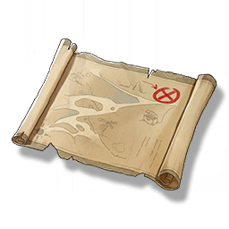

Resonators
Weapons
Items
Shiny Photo
Missions

A photo recording the location of the treasure.
A real photo as shiny as new, with a mark on the photo, it seems to be in a place in the Dim Forest area, maybe you can find some treasure there.